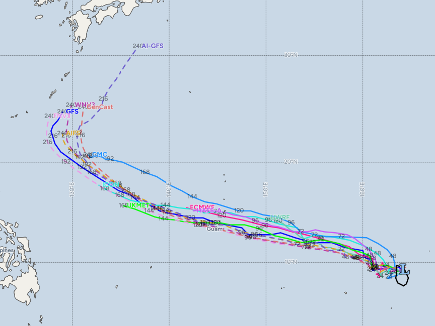
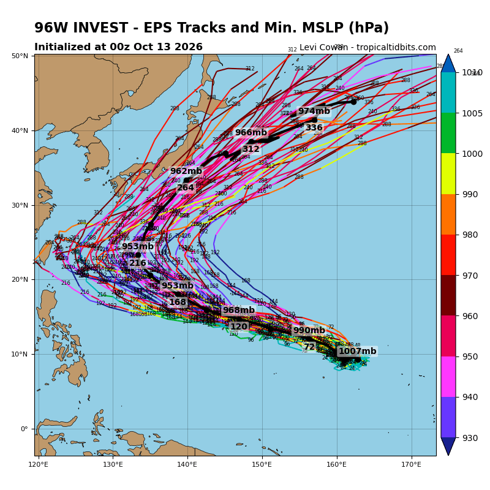
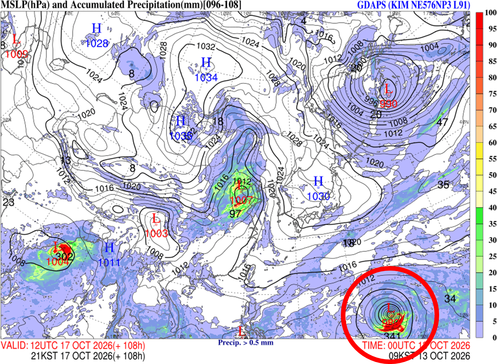

현재 괌 국제공항 동남동쪽 약 2,120km 거리 해상인 미크로네시아 연방과 마셜제도 사이 해상(9.7°N 163.8°E 부근)에서 96호 열대요란이 발달중

주요 예보 모델들은 120시간 이내에 이 열대요란이 열대저기압(TD)을 넘어 열대폭풍(30호 태풍)으로 발달할 것으로 내다보고 있음
120시간 범위 모델 예측으로는 일단 괌과 사이판에 영향을 줄 것으로 보이고 있음
참고로 30호 태풍이 발달할 경우 그 이름은 "참피"가 된다.
(2015년 25호, 2021년 5호 태풍으로 사용했던 이름)
이름의 뜻은....
이거 말고
이걸 의미하는 이름이다.(참피꽃, 참파라고도 함)
태풍하고는 상관없습니다